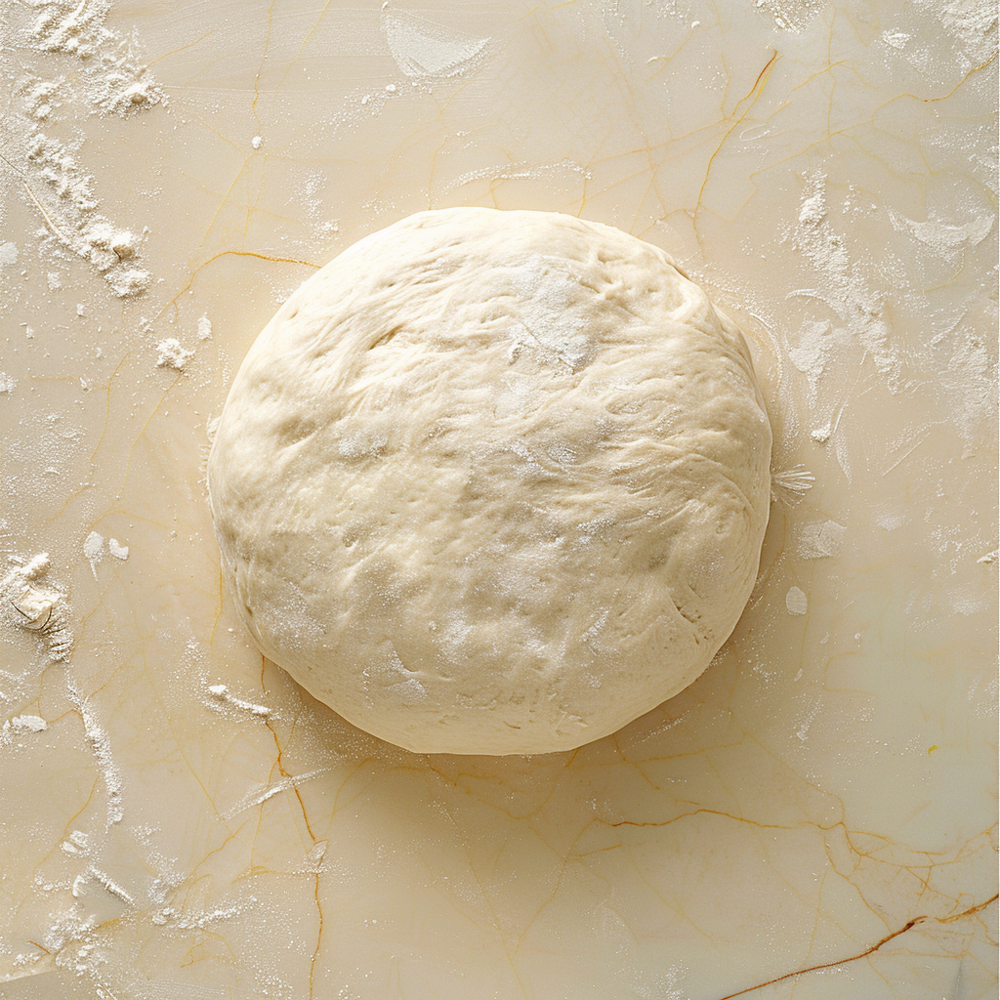
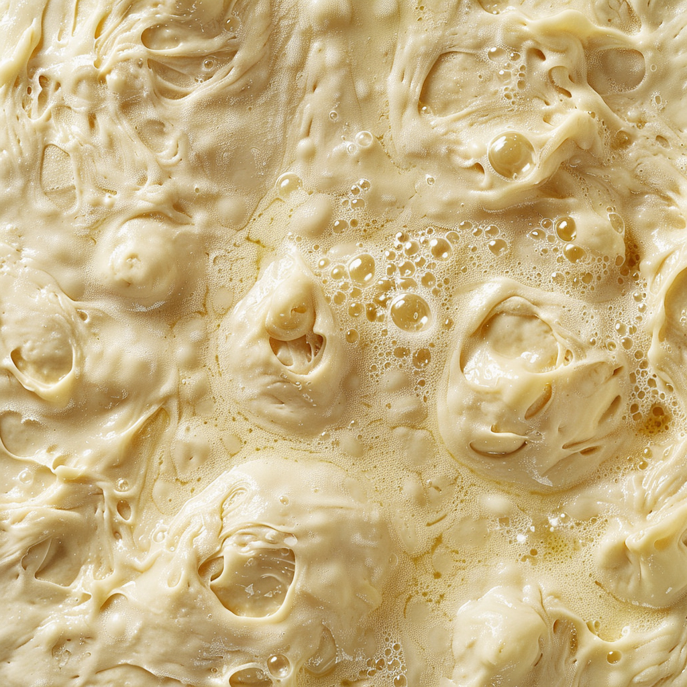
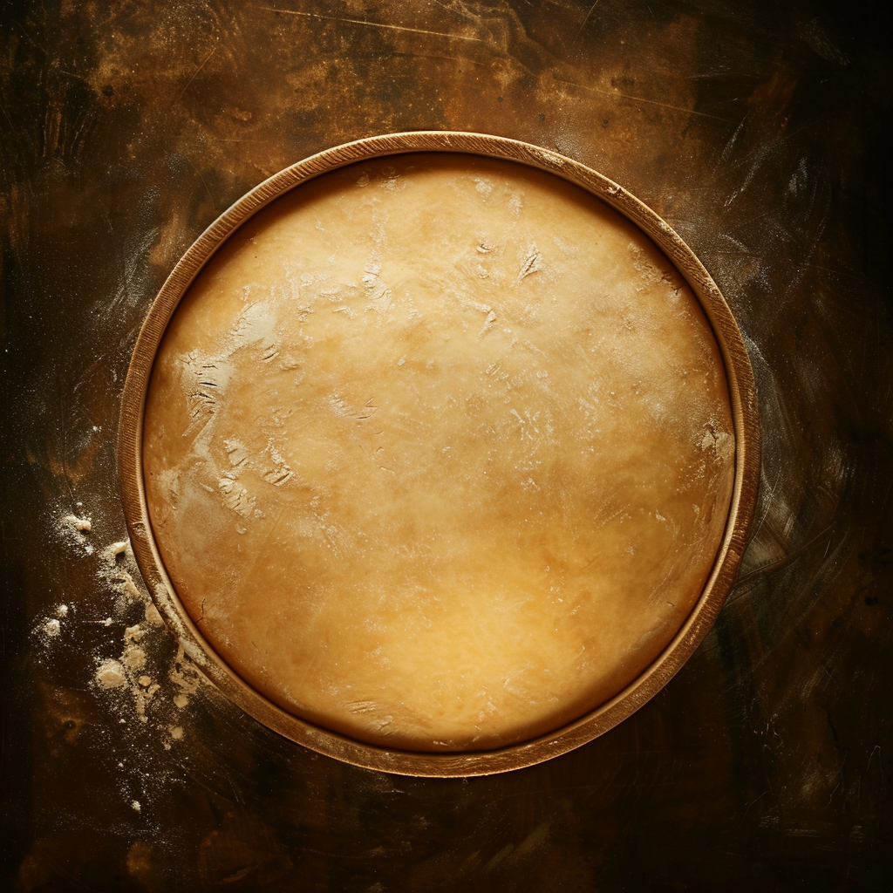
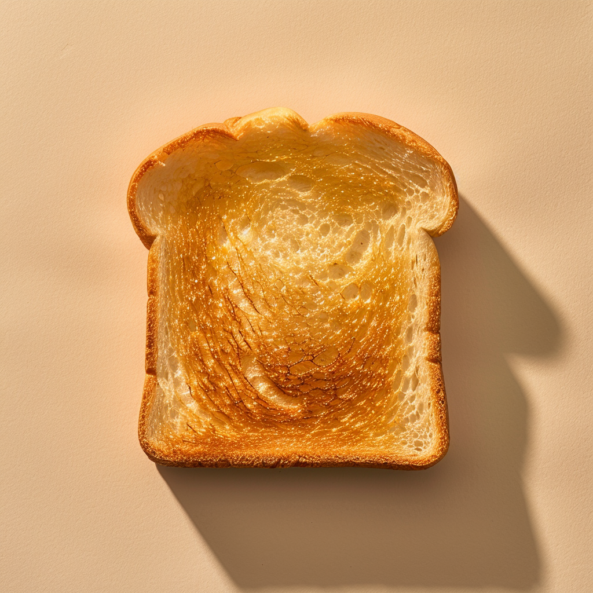
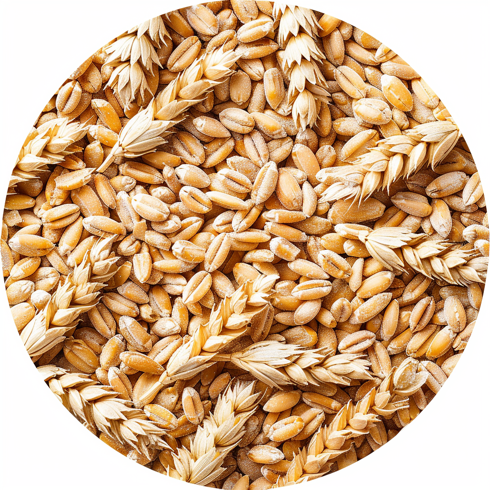
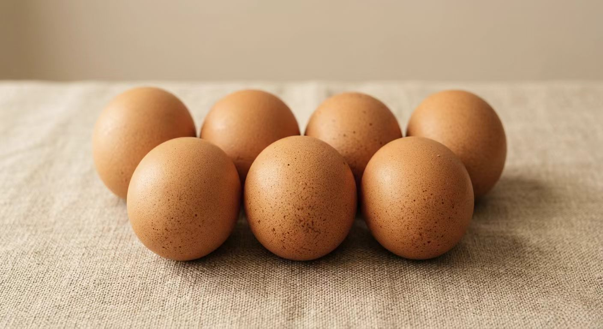
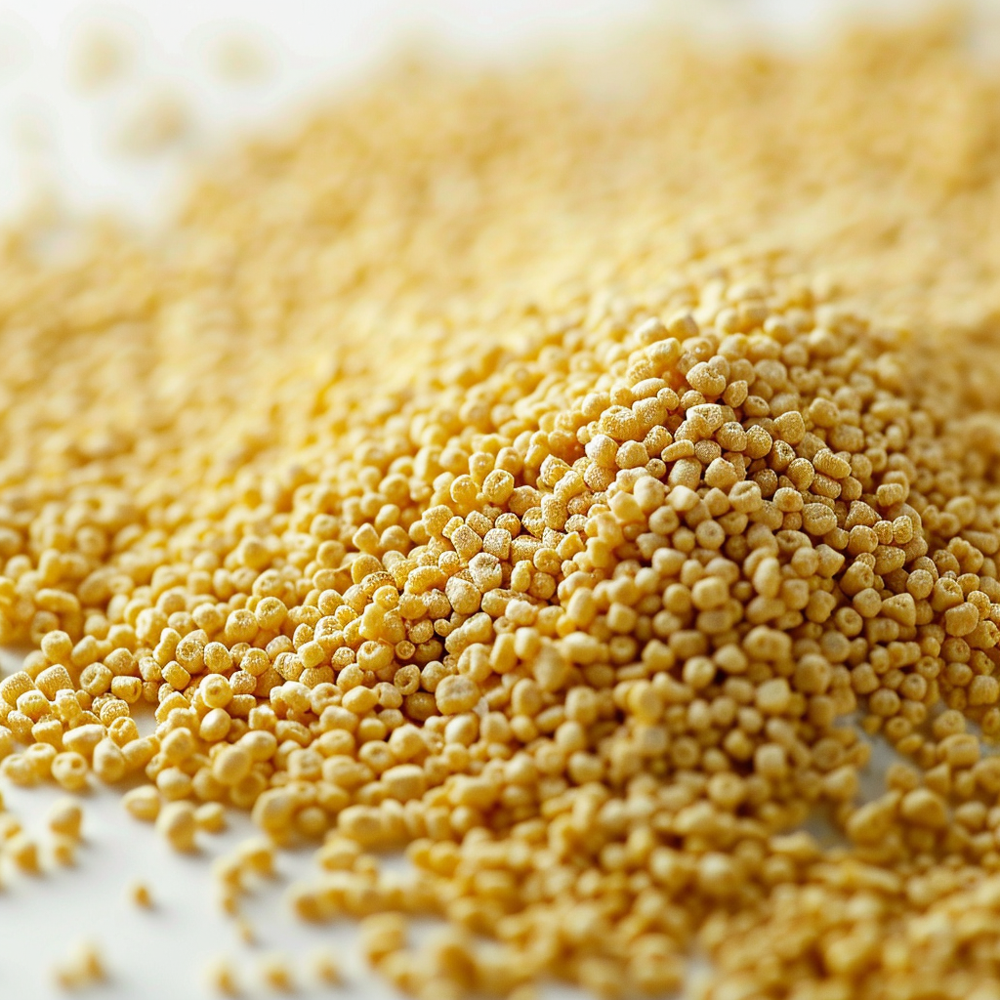

高筋小麦粉、新鲜牛奶、鸡蛋、天然酵母—— 四种原料在这里相遇。 揉制，混合，静待时间施展魔法。
酵母开始工作。面团在恒温恒湿的环境中 缓慢膨胀，产生数以千计的细小气泡—— 这就是未来面包蓬松口感的来源。
220°C 隧道烤炉，面包表面发生美拉德反应， 形成独特的焦糖色泽与香气。 这是工业精度与烘焙艺术的交汇点。
金黄，松软，香气四溢。 从漳州工厂到你的早餐桌， 每一片豪士都是同一条生产线的诚意。
每一种原料都经过严格筛选。 微距镜头下呈现的不只是食材， 更是我们对品质的承诺—— 你能看见，所以你能信赖。



全国超过100万个销售网点， 便利店、商超、电商平台均有售。 从明天早上开始。